Cách tải video trên Facebook về điện thoại trong 1 nốt nhạc

Ty Nguyen
CEO ❤️ AhaChat. Love babies & chatbot.
Chắc hẳn khi lướt Facebook xem được video mà bạn cảm thấy thích thú và bạn muốn tải về để xem lại. Nhưng lúc này bạn không biết phải làm sao để tải video trên Facebook về điện thoại của mình? Vậy ĐỪNG LO, bài viết dưới đây sẽ hướng dẫn bạn cách tải video trên Facebook về điện thoại trên cả hệ điều hành Android và iOS. Cùng theo dõi nhé!
1. Tải video Facebook trực tuyến với công cụ Facebook Video Downloader của AhaChat
Khi sử dụng công cụ Facebook Video Downloader của AhaChat để tải video trên Facebook bạn không cần phải cài đặt ứng dụng hỗ trợ từ bên thứ 3, mà bạn có thể tải trực tiếp ngay trên web. Cách thực hiện như sau:
Bước 1: Đầu tiên bạn cần phải truy cập vào công cụ Facebook Video Downloader của AhaChat qua đường link sau:
https://ahachat.com/download-video-facebook
Bước 2: Tiếp tục truy cập vào ứng dụng Facebook tìm đến video bạn muốn tải về. Tại video bạn muốn tải, bạn bấm vào Chia sẻ, sau đó bấm vào Sao chép liên kết để sao chép URL của video đó.
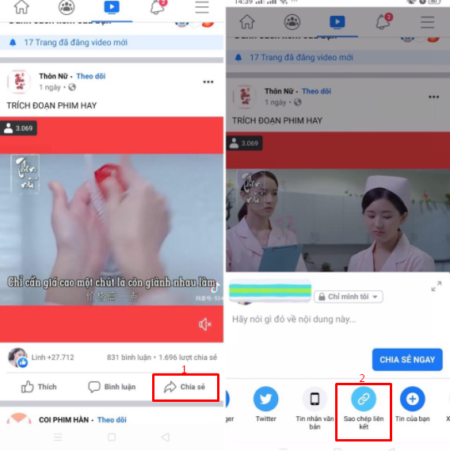
Bước 3: Sau khi bạn sao chép đường liên kết của video, bạn quay lại công cụ Facebook Video Downloader của AhaChat đã truy cập vào ở bước 1, sau đó dán đường link video vào ô Paste Facebook Video URL, tiếp theo bấm vào Download như hình dưới
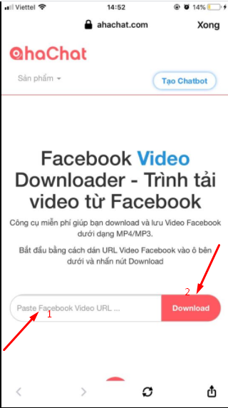
Như vậy là bạn đã tải thành công video trên Facebook về điện thoại thông qua công cụ Facebook Video Downloader của AhaChat, rất đơn giản phải không nào.
II. Tải video Facebook thông qua ứng dụng của bên thứ 3
1. Đối với điện thoại hệ điều hành iOS (Iphone/ Ipad)
Để tải được video trên Facebook về điện thoại Iphone/ Ipad, bạn cần phải có ứng dụng hỗ trợ. Tuy nhiên, hiện nay có khá nhiều ứng dụng có sẵn trên Appstore hỗ trợ tải video từ Facebook. Nhưng không phải ứng dụng nào cũng chất lượng. Dưới đây chúng tôi giới thiệu đến bạn cách tải video trên Facebook về điện thoại nhanh và tốt nhất:
Bước 1: Bạn vào Appstore trên điện thoại, tìm kiếm ứng dụng MyMedia - File Manager và tải ứng dụng về.
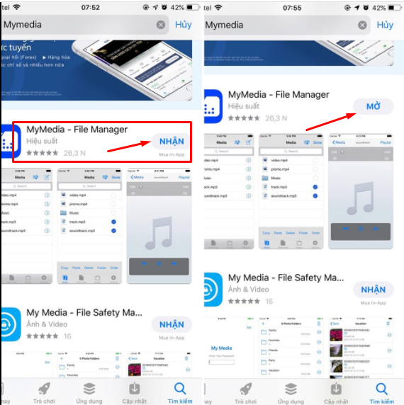
Bước 2: Bạn truy cập vào ứng dụng Facebook trên điện thoại của bạn, tìm kiếm đến video bạn muốn tải về máy.
Tại video bạn muốn tải về điện thoại, bạn bấm vào Chia sẻ, sau đó chọn Sao chép liên kết.
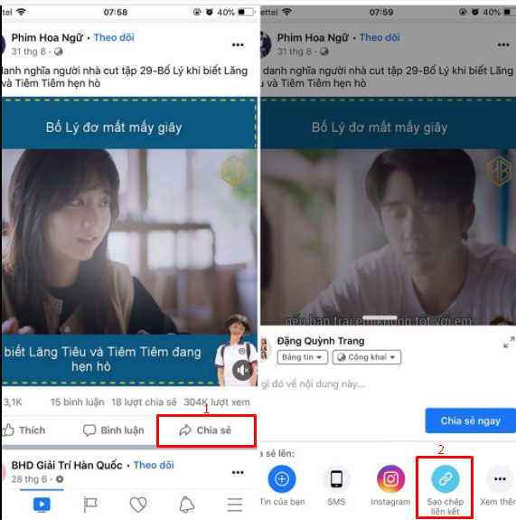
Bước 3: Bạn mở ứng dụng MyMedia - File Manager đã tải ở bước 1, bạn bấm chọn vào mục Savefrom.
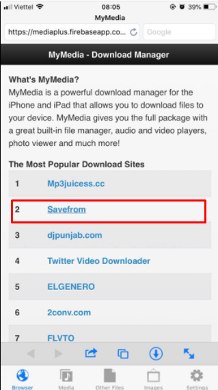
Bước 4: Tại giao diện savefrom.net, bạn dán đường link video nãy vừa copy ở bước 2 vào ô Enter the URL, sau đó nhấn vào nút bên cạnh và cuối cùng là download video về máy điện thoại.
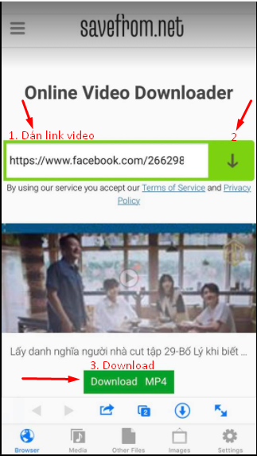
Bước 5: Sau khi bạn bấm vào Download, tiếp tục chọn Download the file.
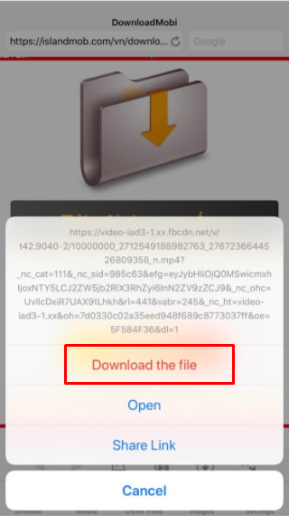
Bước 6: Sau khi bấm vào Download the file, bạn đặt tên cho video sau đó Save lại.
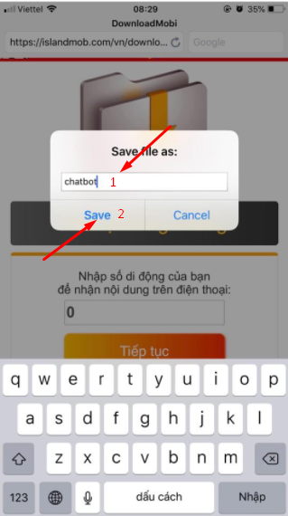
Như vậy là bạn đã hoàn thành tải video trên Facebook thành công về điện thoại Iphone của bạn.
2. Đối với điện thoại hệ điều hành Android
Với những ai đang sử dụng điện thoại hệ điều hành Android, cách tải video về điện thoại đơn giản hơn nhiều so với điện thoại iOS. Bạn có thể thực hiện theo các bước sau để tải video trên Facebook về điện thoại một cách đơn giản nhất:
Bước 1: Bạn đăng nhập Facebook vào ứng dụng Chrome trên điện thoại của bạn
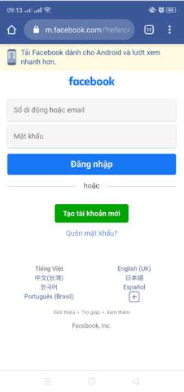
Bước 2: Sau khi đăng nhập vào tài khoản Facebook của bạn, bạn tìm đến video bạn muốn tải. Tại video bạn muốn tải, bạn bấm vào dấu 3 chấm như hình dưới đây.
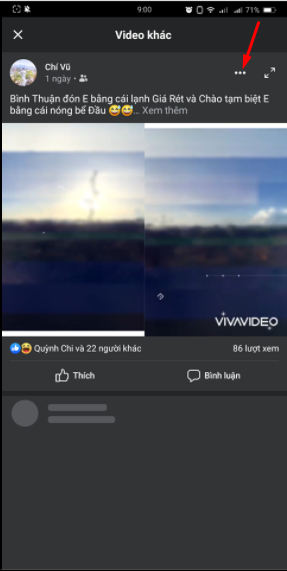
Bước 3: Sau khi bấm vào dấu 3 chấm, bạn bấm vào mục Lưu video để tải video về máy điện thoại của bạn.
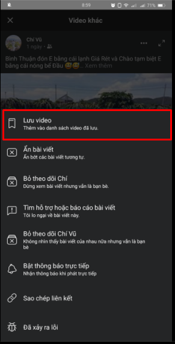
Như vậy, chỉ với vài thao tác đơn giản, bạn đã tải video trên Facebook về điện thoại hệ điều hành Android thành công.
Bài viết trên đây đã hướng dẫn bạn cách tải video trên Facebook về điện thoại trên hệ điều hành iOS và Android. Trong quá trình thực hiện, nếu bạn gặp phải thắc mắc gì thì đừng ngần ngại để lại câu hỏi ngay mục bình luận dưới đây, chúng tôi sẽ hỗ trợ bạn trong thời gian sớm nhất. Hy vọng bài viết hữu ích với bạn, chúc bạn thực hiện thành công!